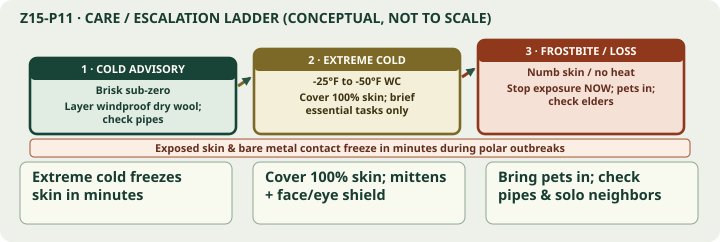

Z15-P11 · Disaster scenarios · New manuscript
Respond safely to extreme wind-chill warnings and sub-zero cold emergencies
Prevent rapid frostbite (under 10 minutes on exposed skin) and vehicle/home mechanical failures during Arctic polar-vortex outbreaks.
When it applies · Extreme Cold Warnings / Wind Chill Warnings (air and wind chills plunging minus 25°F to minus 50°F across the Upper Midwest).
Equipment · Windproof layered outerwear covering every inch of skin, insulated boots/mittens, indoor warmth plan, and neighbor wellness-check list.

Actions
- Restrict outdoor exposure strictly to brief essential tasks during Extreme Cold Warnings—wind chill below minus 30°F freezes exposed cheeks, nose tips, and bare fingers in minutes, while metal door handles and bare fuel nozzles cause instant contact frostbite.[E15, T04]
- Cover 100% of exposed skin before stepping outside (windproof shell, insulated mittens over gloves, face mask/balaclava, goggles, warm hat, dry wool socks), buddy-check faces frequently, and bring pets indoors into heated shelter.[E15, D17]
- Watch vulnerable plumbing pipes, check that car batteries crank before urgent trips, check on elderly/solo neighbors by phone or safe daytime knock, and never let anyone venture out alone in extreme cold without a check-in time.[U10, U14, E15]
Failure recognition · Stepping outside bare-handed in minus 35°F wind chill to shovel snow or pump gas for "just five minutes," freezing fingertips white and numb.[E15, T04]
Verify · Confirm zero exposed skin during brief outdoor tasks, pets sheltered warm, exterior-wall sink cabinets open, and vulnerable neighbors checked.[E15, U10, D17]
Stop or change course · Tingling/numb white skin, shivering/clumsiness, or outdoor work that can wait until midday warmth halts exposure immediately.[E15, T04, E06]
Evidence and editorial notes
- D17 · FEMA / Ready.gov · Prepare Your Pets for Disasters (current web edition)
- Section: Pet, Service-Animal, and Vulnerable-Member Accountability · Conditions: Households with pets, service animals, children, older adults, or access/functional needs
Support: Include leashes, carriers, vaccination records, pet food/water, and pet-friendly shelter lists in household evacuation plans—never leave pets chained or trapped behind; coordinate explicit buddy assignments for children, older adults, and mobility/power-dependent household members.
Limitations: General public Red Cross shelters always admit service animals under ADA rules, whereas companion pets often require separate co-located or pet-friendly shelters. · Conflicting evidence: None; complements T10 disability planning.
Editorial note: Ensures complete household and vulnerable-group accountability in Z15. · Specialist reviewer: Accessible emergency management and animal welfare
Primary source · checked 2026-11-24 - E06 · CDC · Preventing Hypothermia (current web edition)
- Section: Recognizing and treating hypothermia · Conditions: Cold wet exposure; signs such as confusion, slurred speech, fumbling or drowsiness
Support: Suspected hypothermia warrants prompt help and protection from further cooling. It can occur above freezing if wet or chilled.
Limitations: Early mild shivering can mask rapidly worsening judgment impairment. · Conflicting evidence: None; aligns with ARC and WMS guidance.
Editorial note: Anchors exposure-to-medical escalation thresholds. · Specialist reviewer: Wilderness medicine
Primary source · checked 2026-11-24 - E15 · NWS · Cold Weather Safety (current web edition)
- Section: Cold Weather Safety > Wind Chill and Dressing for Cold · Conditions: Cold, windy conditions where exposed skin cools rapidly
Support: Wind removes the thin warm air boundary layer around skin and permeable fabrics, sharply accelerating heat loss and frostbite onset; windproof outer shells and sheltered microclimates mitigate convective loss.
Limitations: Wind chill charts apply to exposed skin and do not change freezing point of water or equipment. · Conflicting evidence: None; clarifies physical mechanism of convective heat loss.
Editorial note: Supports wind-block geometry, shell layering, and wind-chill risk decisions. · Specialist reviewer: Cold-weather shelter and meteorology
Primary source · checked 2026-11-24 - T04 · Wilderness Medical Society · Frostbite clinical practice guideline 2024 update (2024)
- Section: Field treatment scenarios and Table 1 · Conditions: Suspected frostbite outside immediate medical care
Support: Avoid refreezing. Whether to actively thaw depends on ability to keep tissue thawed and evacuate. Detailed treatment requires clinical review.
Limitations: Field assessment cannot reliably determine final tissue depth. · Conflicting evidence: Supersedes outdated rubbing or snow-pack thawing myths.
Editorial note: Retained for cross-zone cold-injury stop boundaries. · Specialist reviewer: Wilderness medicine
Primary source · checked 2026-11-24 - U10 · FEMA / Ready.gov · Winter Weather (current web edition)
- Section: Winter Household Resilience > Frozen Pipes, Ice Dams, and Heating Loss · Conditions: Sub-zero Upper Midwest winter outages and prolonged cold snaps
Support: Prevent burst pipes by insulating exposed lines, keeping cabinet doors open, shutting off and draining water lines per plumbing guidance if indoor temperatures drop toward freezing, and consolidating household occupants into one safe insulated interior room.
Limitations: Draining hydronic boilers or gas water heaters requires exact manufacturer/plumber steps to prevent equipment damage or gas leaks. · Conflicting evidence: None; regionalizes winter home defense for Minnesota conditions.
Editorial note: Anchors winter pipe protection, thermal-zone consolidation, and abandonment thresholds. · Specialist reviewer: Residential plumbing, HVAC, and cold-weather emergency management
Primary source · checked 2026-11-24 - U14 · FEMA / Ready.gov · Make a Plan (current web edition)
- Section: Household Emergency Planning, Utility Maps, and Outage Checklists · Conditions: Pre-outage residential documentation and household drills
Support: Document main water, electrical panel, and gas shutoff locations, utility outage phone numbers, medical power registries, and neighborhood check-in networks on paper before storms hit.
Limitations: Utility medical-priority lists do not guarantee uninterrupted power during major ice storms or grid blackouts. · Conflicting evidence: None; bridges Z01 planning with Z13 household infrastructure.
Editorial note: Grounds household utility mapping and vulnerable-occupant contingencies. · Specialist reviewer: Emergency management and accessibility specialist
Primary source · checked 2026-11-24
Source lineage · NWS Cold Weather Safety and CDC Hypothermia; new manuscript · Classification · New manuscript.